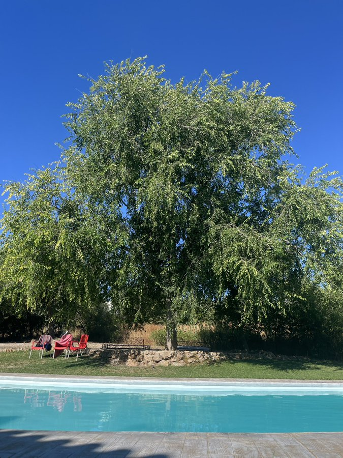

19 de agosto de 2023
Terminar, finalizar, acabar, concluir, consumar. Todos sinónimos que guardan una estrecha relación con su antónimo. En una circunferencia, acabar implica que el siguiente paso es empezar. En una recta infinita, nunca se acaba y, por ende, nunca más se vuelve a empezar. En un segmento, acabar significa que empieza la nada, el vacío. En una curva, tras virar en su doblez, empiezas en otra dirección.
Hasta en el final de los días, acabar siempre traerá un nuevo inicio. Acabar algo no es malo cuando te das cuenta de que mañana algo nuevo comenzará. Acaba mi cuarto de siglo, empieza mi camino a la madurez. Nos vemos allí.

“Bienaventurados sois cuando por mi causa os insulten y os persigan, y digan toda clase de mal contra vosotros, mintiendo. Gozaos y alegraos, porque vuestro galardón es grande en los cielos; porque así persiguieron a los profetas que fueron antes de vosotros.”>> HomeMateo 5:11-12